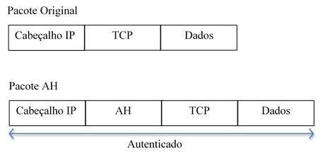

A Internet, na sua concepção originária, foi projetada de forma
a ser a mais simples e genérica possível, possibilitando assim a sua rápida expansão e crescimento.
Toda essa simplicidade é, de fato, percebida na facilidade de desenvolvimento e integração entre
diversas redes. Contudo, grandes modificações no kernel da Internet não são possíveis de serem
feitas. Dessa forma, projetos atuais que levam em consideração requisitos que não foram
inicialmente pensados na concepção da Internet, como por exemplo Segurança da Informação e
Mobilidade de Hosts, possuem passos adicionais para serem implementados de forma
satisfatória, como a utilização de outros protocolos.
Com o avanço da Globalização, grandes volumes de dados sensíveis trafegam diariamente por
todo o planeta através da Internet, como transações financeiras, dados bancários, informações
governamentais secretas, controle remoto de armas militares, etc. Começou-se a pensar, então,
em métodos e protocolos para evitar que tais informações fossem capturadas indevidamente.
O protocolo de Internet (IP) versão 6 (IPv6), quando em desenvolvimento, tinha como principais
objetivos a expansão do número possível de hosts e aumentar a segurança na camada de Rede.
Percebeu-se então, que estas técnicas de segurança também poderiam ser aplicadas ao IPv4,
que é largamente difundido e utilizado, além de que sua substituição pelo IPv6 está se dando
a passos lentos.
O principal protocolo de segurança desenvolvido foi o IP Security Protocol (IPSec).
Sua maior vantagem é o fato de prover serviço seguros de forma transparente, tanto para as aplicações,
quanto para os usuários. Além disso, as aplicações que usam IPSec, não precisam ser modificadas
de nenhuma forma. Isso é particularmente importante, quando se trabalha na segurança de uma
determinada aplicação, porém não se possui o seu código fonte, fato bem comum atualmente.
O IPsec integra sistemas de autenticação, gestão e distribuição de chaves de forma a estabelecer
conexões mais seguras, como veremos nos tópicos a seguir.
2. Conceitos Básicos
Considerando que duas entidades queriam se comunicar de forma segura através de um meio público como a Internet,
algumas propriedade são desejáveis, conforme indicado em [1]:
Confidencialidade - apenas remetente e destinatário tem acesso a mensagem descodificada
Integridade da Mensagem - Confiança de que a mensagem não foi alterada durante a transmissão
Autenticação de Ponto Final - Remetente deve confirmar a identidade do destinatário e vice-versa
Segurança Operacional - O ambiente em que a mensagem é escrita deve estar bem protegido. Esta
característica não envolve o IPsec, e está além do escopo deste trabalho. Porém, é característica
fundamental de uma comunicação segura.
2.1. Criptografia
Uma mensagem sem codificação, tem seu conteúdo em texto plano (também conhecido como texto claro ou aberto).
Uma mensagem que passa por um algoritmo de criptografia passa a ter um conteúdo em texto cifrado, intelegível
para um interceptor na transmissão.
Técnicas e algoritmos de transmissão são publicados e padronizados na Internet (p.ex as RFCs 1321, 3447, 2420).
Independente da técnica usada, uma mensagem criptograda só pode ser descriptografada com uma chave de segurança.
Esta chave (que pode ser a mesma para ambos ou exclusiva de cada um) serve de parâmetro para que o algoritmo de
decriptação possa transforma a mensagem em texto cifrado em uma mensagem em texto plano. A figura 1
ilustra os componentes básicos de um sistema de criptografia.
Ideia geral de criptografia
2.2. Funções de Hash criptográficas
Se diferem das funções hash comuns por ser uma função bijetora, ou seja, existe um único hash para a mensagem
escrita. Em outras palavras um invasor não consegue reproduzir o mesmo hash com uma mensagem diferente. Algoritmos
de hash criptografados bem conhecidos são o MD5[RFC 1321] e o SHA-1[FIPS, 1995].
Funções hash criptografadas são usadas para atender a propriedade de integridade da mensagem em uma comunicação
segura.
2.3. Código de Autenticação de Mensagem
Nos cenários descritos, ainda é possível q o invasor crie uma mensagem qualquer, gere um hash válido e envie
para um receptor, falsificando sua identidade como remetente.
Portanto, emissor e receptor compartilham um segredo chamado de chave de autenticação de mensagem. Essa chave
é uma sequência de bits que é concatenada à mensagem original para o cálculo da função hash criptográfica.
O receptor, que possui o código de autenticação, calcula o hash da mensagem recebida concatenada de seu código.
Se o valor do hash recebido for igual ao do hash calculado, a mensagem é autêntica. A figura 2 ilustra esse
processo.
...
2.4. Assinatura Digital
Têm-se até aqui, garantias de confidencialidade e integridade. Resta identificar um usuário. Ou seja,
garantir que aquela mensagem válida foi enviada pelo usuário X e somente ele poderia ter enviado essa mensagem.
Neste caso, uma altenativa é usar um par de chaves (uma pública e uma privada). A chave pública conhecida por
todos, inclusive pelo destinatário. O remetente "assina" sua mensagem utilizando sua chave privada no hash citado
na seção 2.2. O destinatário utliza a chave pública do remetente para chegar ao hash da mensagem e utiliza a
mensagem para chegar ao hash da mensagem (como explicado na seção 2.3). Caso o valor obtido nos dois processos
seja o mesmo, o remetente está identificado.
3. Arquitetura do IPsec
O IPsec (Internet Protocol Security) é um modelo ponto-a-ponto permitindo a troca de informações
através de dois computadores de maneira segura; um servidor de aplicações e um servidor de base de dados.
Tornando-se totalmente transparente para as aplicações pelo fato dos serviços serem criptografados, terem
integridades e autenticação nas implementações no nível de transporte obtendo um acordo sobre uma concessão
de conjuntos de regras e de definições do protocolo. Com o uso do IPsec e das tecnologias associadas, os dois
computadores serão capazes de autenticar-se mutuamente mantendo uma comunicação segura, mesmo usando um meio
não seguro como a Internet.
Uma plataforma aberta formada por um conjunto de protocolos que são designados a prover segurança para
comunicações IP a nível de rede, proporcionando proteção a ataques de repetição por meio do uso de inúmeras
sequências. Fornece privacidade, integridade e autenticidade das informações transferidas através de redes
IP para redes LANs (Local Área Networks), WANs, Públicas e Privadas. No IPsec a aplicação mais comum é a
criação de redes virtuais privadas VPN (Virtual Private Network), seus serviços podem ser manuseados por
quaisquer protocolos das camadas superiores como: TCP, UDP, ICMP, BGP.
O objetivo do IPsec é garantir a privacidade para o usuário, integridade dos dados e autenticação das
informações transferindo-as através de redes IP pela internet. A construção de túneis seguros sobre redes
de internet ou intranet é permitido no IPsec, todas as informações passadas através da rede são abreviadas
pelo gateway IPsec, sendo assim, o IPsec juntamente com o L2TP (Layer 2 Tunneling Protocol) é considerado
uma das opções mais indicadas para criação de conexões de VPN. Os protocolos IPsec foram desenvolvidos pelo
IETF (Internet Engineering Task Force) e são implementados tanto em IPv4 como IPv6.
Quase todos os fornecedores de soluções de firewall ou software de segurança suportam o IPsec.
Figura 3.1: Rede Virtual Privada (VPN). Adaptado de [KUROSE]
No IPsec a criptografia e autenticação de pacotes são realizadas na camada de rede, fornecendo uma solução
de segurança fim-a-fim, garantindo a integridade, confidencialidade e autenticidade dos dados. O IPsec fornece
três protocolos principais: autenticação, referenciada como Authentication Header (AH), autenticação/criptografia
chamada Encapsulating Security Payload (ESP), e IKE (Internet Key Exchange) troca de chave. Além dessas estruturas,
o IPsec utiliza o conceito de Associação de Segurança (Security Association - SA) permitindo a comunicação entre
duas ou mais entidades comunicantes descrevendo todos os mecanismos de segurança a serem utilizados; algoritmo e
modo de autenticação a aplicar no cabeçalho de autenticação, chaves usadas nos algoritmos de autenticação e
criptografia, tempo de vida da chave, tempo de vida da associação de segurança, nível de sensibilidade dos dados
protegidos. Quando uma entidade desejar estabelecer uma associação de segurança, utilizará um SPI (Security Parameter
Index) e um endereço de destino enviando as informações à entidade com que deseja estabelecer o canal de segurança.
Dessa maneira, para cada sessão de comunicação autenticada serão necessários dois SPIs, ou seja, um para cada sentido,
sendo necessário pelo fato da associação de segurança ser unidirecional. Como padrão, os algoritmos utilizados são
HMAC-MD5 e HMAC-SHA-1 para autenticação e DESC-CBC para a criptografia do cabeçalho. Existe uma importância em destacar
que os cabeçalhos utilizados são de extensão e irão ser adicionados a um cabeçalho IP. Assim, os encaminhadores do
pacote poderão interpretá-lo como se fossem parte integrante dos dados, permitindo que equipamentos que conheçam IP
e desconhecem IPsec possam ser utilizados normalmente.
Figura 3.2: Estrutura Geral do IPsec. Adaptado de [JAMHOUR].
3.1. Cabeçalho de Autenticação
O AH (Authentication Header) é um mecanismo para controle de acesso baseado na distribuição de chaves criptográficas
e gerenciamento do fluxo de tráfego dos protocolos seguros. O protocolo AH, oferece serviço de autenticação para o
pacote, uma proteção não alterando a mensagem, adicionando um cabeçalho do tipo AH ao pacote IP contendo um hash de
dados e uma sequência numérica podendo verificar a integridade dos dados e a autenticidade do emissor do pacote.
Composto por um campo chamado numseq, que contém um contador que é incrementado automaticamente e é usado para proteção
contra replays. Possui um campo chamado dados de autenticação que é um campo de tamanho variável que contém o código de
integridade da mensagem para o pacote. O campo necessita ser múltiplo inteiro de 32 bits.

Figura 3.3: AH (Authentication Header). Adaptado de [RICCI]
O cabeçalho AH possuí a funcionalidade de validação da identidade de entidades comunicantes, certificando que o
emissor/receptor é realmente quem diz ser. O cabeçalho é apenas adicionado ao datagrama IP, por consequência,
não oferecendo segurança contra-ataques de análise de tráfego ou confidencialidade. O AH usa um algoritmo de
hashing e números de sequência para garantir a integridade da informação até o seu destino. O algoritmo de
hashing é responsável por criar um valor de integridade, sendo chamado de Valor de Checagem da Integridade
– ICV. Ao realizar um hash das partes do cabeçalho de IP e das partes dos dados do pacote, somente os dados
do cabeçalho serão utilizados, por serem incorporados somente no cabeçalho e não serem identificados até que
sejam calculados.
Com a adição do cabeçalho, o IP Seguro - IPsec possui:
Autenticação através do cabeçalho adicionado;
Garantia de integridade dos dados, verificando se não ocorreu nenhuma alteração durante o transporte;
A partir daí o cabeçalho AH que foi preenchido e anexado ao cabeçalho IP do pacote original, obtém a integridade
de seus pacotes IP transmitidos através de uma assinatura digital. Para que ocorra uma garantida para a integridade
dos pacotes após a transmissão dos mesmos, o destinatário realiza o cálculo na assinatura digital e, se estiver
exatamente igual ao resultado recebido, comprovasse que o pacote não foi alterado durante a transmissão.
Figura 3.4: Cabeçalho do AH. Adaptado de [FRIEDL]
3.2. Encapsulamento de Dados de Segurança
O cabeçalho de Encapsulamento de Dados de Segurança (ESP) é responsável pela criptografia dos dados que
são inseridos entre o cabeçalho IP e o restante do datagrama. Os campos de dados são alterados após serem
criptografados. Simultaneamente com o ESP, segue o SPI para informar ao recipiente do pacote como proceder
para abertura apropriada do conteúdo do mesmo. Um contador no ESP informa quantas vezes o SPI foi utilizado
para o mesmo endereço IP de destino. Esse mecanismo previne um tipo de ataque no qual os pacotes são copiados
e enviados fora de ordem, confundindo assim os nós de comunicação.
Todo o pacote, com exceção a parte de autenticação, é criptografado antes de ser transmitido. O somatório
de verificação (checksum) é computado sobre todo o ESP, com exceção do campo de autenticação, e o seu comprimento
varia de acordo com o algoritmo utilizado. Os algoritmos de criptografia utilizados são o DES (Data Encryption
Standard) e o 3 DES (Triple Data Encryption Standard). A autenticação do ESP é diferente realizada pelo AH, pois
não realiza a proteção do cabeçalho IP que precede o ESP, apesar de que proteja um cabeçalho IP encapsulado no
Modo Túnel. O AH, por sua vez, protege este cabeçalho externo, juntamente com todo o conteúdo do pacote ESP.
E as duas autenticações não são utilizadas ao mesmo tempo por questão de economia de processamento.
3.3. Internet Key Exchange
O IKE (Internet Key Exchange, também conhecido como IKEv2) provê o gerenciamento da segurança para o
Security Association. O IKE autentica cada ponto (host/gateways/servidores) de uma conexão IPsec, negocia
políticas de segurança e manipula as trocas das chaves de sessão.
Além disso, é possível usar certificados X509v3 para a autenticação dos equipamento envolvidos
durante a negociação do IKE. O gerenciamento dos certificados inclui o uso do SCEP (Simple Certificate
Enrollment Protocol), que permite a comunicação com uma Autoridade Certificadora (CA – Certificate Authority).
Este certificado suporta ainda estrutura hierárquica para o uso em uma infra estrutura de chaves públicas
(PKI – Public Key Infrastructure)
Os componentes para isso incluem o uso do protocolo de chaves públicas Diffie-Hellman para estabelecer uma
chave de sessão mesmo estando em um meio inseguro, como a Internet
Resumidamente o IKE provê quatro funcionalidades:
Provê meios para as partes negociarem quais protocolos, algoritmos e chaves a serão usadas.
Garante a identidade das partes, tanto do cliente, quanto do servidor.
Gerencia as chaves após elas estarem em uso.
Garante que as trocas de mensagens que contém chaves sejam feitas por meios muito seguros.
A Internet Key Exchange (IKE) é um protocolo de gestão de chaves que usa a porta 500 UDP, responsável
pela criação, eliminação e alteração das chaves para autenticação e validação de informações, o IKE foi
definido como regras de gestão o protocolo híbrido, constituído pelo ISAKMP e pelo Oakley, também denominado
IKE. É usado para criar uma SA no IPSec, ou seja, negocia políticas de segurança e organiza as trocas das
chaves de cada sessão (ANDREOLI, 2012).
Uma SA pode ser configurada manualmente em cada gateway por um administrador de segurança, ou pode ser
alterada pelo protocolo IKE dinamicamente, para que possa garantir uma segurança ainda maior (SANT’ANNA, 2003)
A especificação do IPSec determina que a gerência de chaves pode ser implementada de modo manual ou automática.
O protocolo IKE implementa a gerência automática de chaves. Trata-se de um protocolo híbrido constituído pelo ISAKMP
e pelo OAKLEY.
O ISAKMP é responsável pelo estabelecimento, negociação, modificação e exclusão das AS’s. Ele define o formato dos
pacotes e os procedimentos. O OAKLEY fornece o mecanismo de troca de chaves utilizado pelo ISAKMP. Ele é uma
variação mais segura do algoritmo Diffie-Hellman.
O IKE age em duas fases. Na primeira fase, dois pares estabelecem um canal seguro para realizar as operações
do ISAKMP (o ISAKMP SA). Na segunda fase, os dois pares ajustam os SA de propósito geral.
Para o estabelecimento de uma associacão segura IKE, o modo que inicia a negociação deve propor os seguintes itens:
O algoritmo de criptografia para proteger os dados;
Um algoritmo de hash para assinatura digital;
Um método de autenticação para assinar o hash;
Informação sobre qual grupo a troca Diffie-Hellman deve feita;
Especificação da função pseudo randômica para fazer o hash de certos.
3.4. Modos de Operação
O IPsec possui dois modos de funcionamento: o Modo Transporte e o Modo Túnel e dois tipos de protocolos:
o Authentication Header (AH) e o Encapsulating Security Payload (ESP) para transferência segura de informação.
O terceiro protocolo é o Internet Key Exchange Protocol (IKE), sua função é realizar a autenticação das entidades
envolvidas e gerir automaticamente as ligações IPsec. Transporte O IPsec trabalha em dois modos, modo de Transporte
e modo Túnel. No modo de Transporte, apenas o segmento da camada de transporte á processado, isto é, autenticado
e criptografado. Este modo é aplicável para implementações em servidores e gateways, protegendo camadas superiores
de protocolos, além de cabeçalhos IP selecionados. O cabeçalho AH é inserido após o cabeçalho IP e antes do
protocolo de camada superior (TCP, UDP, ICMP), ou antes de outros cabeçalhos que o IPsec tenha inserido. Os
endereços de IP de origem e destinos ainda estão abertos para modificação, caso os pacotes sejam interceptados.
Modo transporte garante a segurança apenas dos dados provenientes das camadas superiores é utilizado para
comunicação “fim-a-fim” entre computadores. O Modo Túnel que fornece segurança para a camada IP e é utilizado
para comunicação entre roteadores. Ambos os protocolos AH e ESP podem funcionar no modo transporte e túnel.
3.4.1. Modo Transporte
O Modo Transporte é utilizado para estabelecimento de ligações seguras entre hosts. Neste modo é mantido o
header original dos pacotes IP e protegido apenas a informação das camadas superiores. Neste modo os hosts
necessitam de suportar a funcionalidade IPsec.
Protocolo AH realiza a autenticação e integridade dos dados do pacote IP original.
É mantido o IP header original e inserido o header do protocolo AH para a proteção.
Protocolo ESP realiza autenticação, integridade e confidencialidade (encriptação)
do conteúdo do pacote IP original. É mantido o cabeçalho IP original e inserido o cabeçalho e o
tailer do protocolo ESP para a proteção
Emissor e receptor devem possuir suporte ao IPsec. O cabeçalho IP mantém-se original, protegendo
apenas os cabeçalhos superiores, pois o cabeçalho IPsec é adicionado imediatamente após o cabeçalho IP,
antes dos cabeçalhos dos protocolos das camadas superiores.
3.4.1. Modo Túnel
O Modo Túnel todo o pacote IP é autenticado ou criptografado, resultando apenas o cabeçalho IP externos
visíveis, transmitindo o destino do gateway (roteador, firewall, etc), permanecendo todo o conteúdo interno
criptografado.Este método pode-se usar para evitar a análise de tráfego. Devido ao fato de o cabeçalho IP
conter o endereço de destino e possivelmente as diretivas de roteamento e informação proveniente da opção
salto-por-salto, não é possível transmitir o pacote IP criptografado dispondo prefixo de cabeçalho ESP,
pois roteadores intermediários seriam incapazes de processar o pacote.
É necessário encapsular o bloco inteiro do cabeçalho ESP mais o pacote IP criptografado com um novo cabeçalho
IP que deverá conter informações suficientes para o roteamento, mas não para a análise de tráfego. “Enquanto o
modo de transporte é adequado para proteger conexões entre estações que suportam o modo ESP o modo túnel é útil
numa configuração que inclua um firewall ou outro tipo de gateway de segurança que protege uma rede confiável
das redes externas. No segundo caso, a criptografia acorre apenas entre uma estação externa e o gateway de
segurança, ou entre dois gateways de segurança”. Liberando as estações da rede interna do processamento de
criptografia e simplificando a tarefa de distribuição de chaves pela redução do número de chaves necessárias.
Inibindo a análise de tráfego baseada no destino final.
O protocolo AH realizada autenticação e integridade de todo o pacote IP original. Um novo IP header
e o header do protocolo é inserido no AH para a proteção. O IP header original contém os endereços IP de
origem e destino da mensagem, enquanto o novo IP header contem os endereços IP das gateways IPsec.
O protocolo ESP realiza autenticação, integridade e confidencialidade do pacote IP original. Um novo
IP header é inserido no ESP header e um ESP Tailer para a proteção. Os endereços IPs de origem e destino
da mensagem são inseridos o IP header original, enquanto o novo IP header contém os endereços IP das
gateways IPsec.
O Modo Túnel é o modo mais utilizado e serve para criar uma ligação segura VPN entre duas gateways ou
entre uma gateway e um host. No método utilizado os equipamentos internos não precisam de suportar o IPsec,
a encriptação e desencriptação ocorre nas IPsec Gateways. Um novo IP header é criado e o pacote IP original
é totalmente protegido.
4. Aplicações
4.1. Redes Privadas Virtuais
5. Considerações Finais
6. Referências
[1] KUROSE, James F. Redes de Computadores e a Internet - Uma abordagem Top Down, 6/E. Pearson Education India, 2014.
[2] FERGUSON, N.; SCHNEIER, B. A cryptographic evaluation of IPSec. Counterpane Internet Security, Inc, v. 3031, p. 14, 2000.
[3] KENT, S.; SEO, K. RFC 4301: Security architecture for the internet protocol. URL: https://tools.ietf.org/html/rfc4301, 2005.
[4] FRANKEL, S.; KENT, K.; LEWKOWSKI, R.; OREBAUGH, A. D.; RITCHEY, R. W.; SHARMA, S. R. Guide to IPSec VPNs. NIST Special Publication, v. 800, 2005.
[5] OPPLIGER, R. Security at the internet layer. Computer, v. 31, n. 9, p.43{47, 1998.
[6] CAMILO, B. D. C. V. Análise da sobrecarga do ipsec no mapeamento de redes virtuais. 2015. (Undergraduate Final Project) - Universidade Federal do Rio de Janeiro, 2015.
[7] FORTIO, R. M. S. Análise e implementação do protocolo de segurança IPsec na rede de acesso LTE. 2014 (Master Thesis) - Técnico Lisboa. 2014
[8] ALSHAMRANI, H. Internet Protocol Security (IPsec) Mechanisms. International Journal of Scientific & Engineering Research, v. 5, n. 5, p.85{87, 2014.